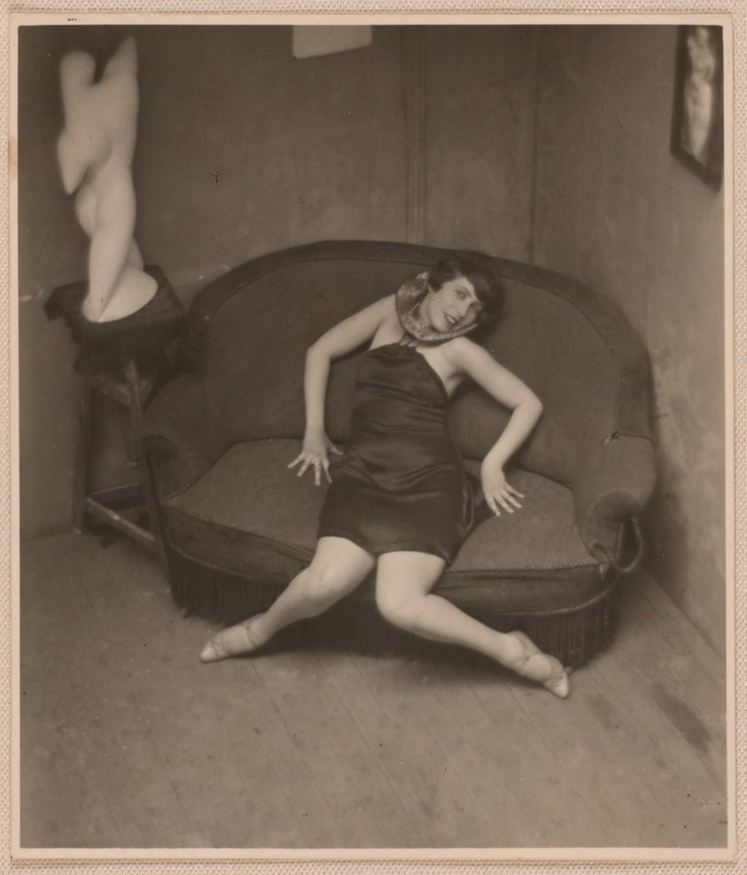

Satiric Dancer, Paris (Variant)
André Kertész · 1927 · Gelatin silver print · 9 × 7.8 cm · Art Institute of Chicago
In copyright. Look and learn: shown for study, not for download.
The dancer is Magda Förstner, posing in the Montparnasse studio of the sculptor Etienne Beöthy; all three, with the photographer, were Hungarians living in Paris. A variant of this picture ran in the Berlin magazine Die Dame in 1927 to illustrate a parable of marital infidelity. The title possibly dates only from the 1960s, when André Kertész recovered the negative and reprinted it many times. This print is 9 by 7.8 centimetres and is believed to be unique.